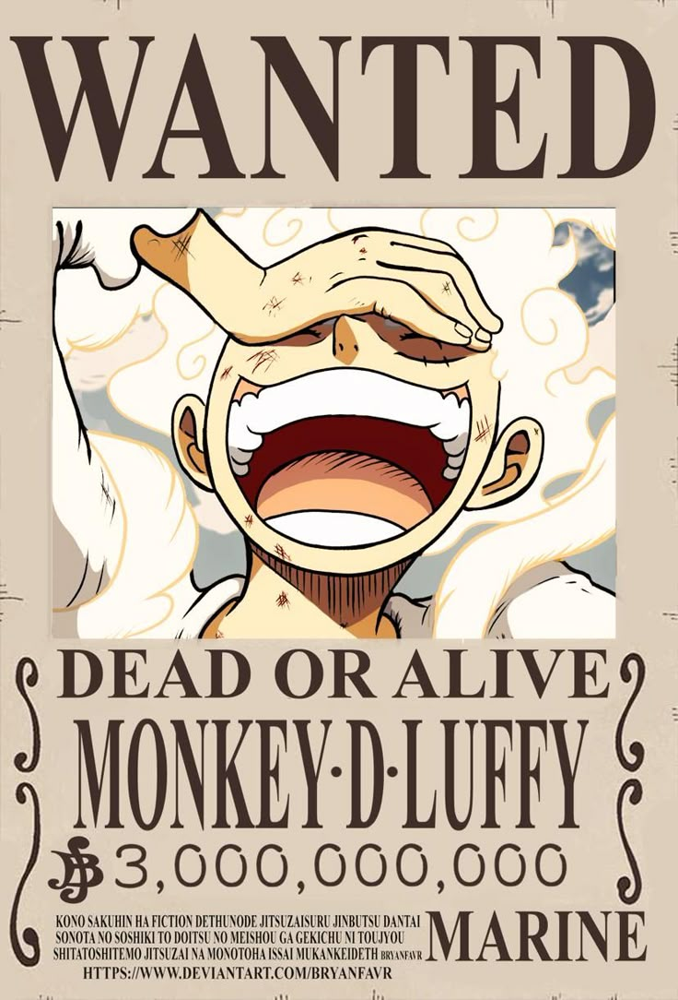

Monkey D. Luffy, juga dikenal sebagai "Luffy Topi Jerami" adalah pendiri dan kapten dari Bajak Laut Topi Jerami yang semakin terkenal dan kuat, serta salah satu bajak laut terkuat dari generasi terburuk, dia ingin menemukan harta karun legendaris yang ditinggalkan oleh mendiang Gol D. Roger dan dengan demikian menjadi Raja Bajak Laut. Dia percaya bahwa menjadi Raja Bajak Laut berarti memiliki kebebasan terbesar di dunia.

Lahir di Desa Foosha, Luffy adalah anak dari Monkey D. Dragon, pemimpin dari Tentara Revolusioner, dan cucu dari pahlawan Marinir Monkey D. Garp, dan keluarga mereka membawa inisial dari Kehendak D. Pada usia 7 tahun, Luffy secara tidak sengaja memakan Gomu Gomu no Mi, yang mengubah tubuhnya menjadi karet, Shanks juga memberi Luffy topi jerami yang telah menjadi aksesori khas Luffy, setelah menghadiahkannya kepada Luffy sebagai bagian dari janji mereka untuk bertemu lagi. Suatu hari setelah dia menjadi bajak laut yang hebat, dan tumbuh di Pulau Dawn di bawah asuhan Curly Dadan, Luffy berteman dan menjadi saudara tersumpah dari mendiang "Tinju Api" Portgas D. Ace dan Kepala Staf Revolusioner Sabo.
Luffy telah melawan banyak kekuatan global di sekitarnya, dimulai dengan melawan bajak laut paling kuat di East Blue dan pindah ke bentrokan melawan Marinir, Tujuh Panglima Perang Laut, Cipher Pol , Bangsawan Dunia, dan bahkan Empat Kaisar dari Grand Line, muncul sebagai pemenang di sebagian besar pertempuran ini. Dia menginvasi dan secara tidak langsung menyebabkan pemusnahan Enies Lobby, melarikan diri dari Impel Down yang tak tertembus, dan menjadi tokoh utama dalam Perang Puncak Marineford.
Dia juga telah mengalahkan atau berteman dengan tujuh dari sebelas Panglima Perang masa lalu atau sekarang yang dikenal sebelum pembubaran organisasi. Selanjutnya, Luffy telah menginvasi wilayah Empat Kaisar dalam beberapa kesempatan, dan akhirnya berhasil mengalahkan salah satunya. Prestasi dan warisan Luffy telah menyebabkan dia dicap sebagai "Elemen Masa Depan Yang Berbahaya".
Luffy juga memiliki kecenderungan untuk menarik pengikut dan dengan enggan dinobatkan sebagai pemimpin dari Armada Besar Topi Jerami, yang terdiri dari tujuh kru bajak laut yang bersumpah untuk datang membantunya setiap kali kru Topi Jerami dalam kesulitan. Setelah mengetahui hal ini dan tindakannya melawan Bajak Laut Big Mom, dunia pun menjulukinya sebagai "Kaisar Laut Kelima", meskipun banyak tokoh terkemuka pada awalnya menganggap ini dibesar-besarkan. Namun, setelah mengalahkan Kaidou selama Raid on Onigashima, Luffy secara resmi dinyatakan sebagai salah satu dari Empat Kaisar oleh Pemerintah Dunia bersama dengan Buggy, menggantikan Kaidou dan Big Mom.

Luffy juga memiliki kecenderungan untuk menarik pengikut dan dengan enggan dinobatkan sebagai pemimpin dari Armada Besar Topi Jerami, yang terdiri dari tujuh kru bajak laut yang berjumlah 5640 orang dan bersumpah untuk datang membantunya setiap kali kru Topi Jerami dalam kesulitan. Setelah mengetahui hal ini dan tindakannya melawan Bajak Laut Big Mom, dunia pun menjulukinya sebagai "Kaisar Laut Kelima", meskipun banyak tokoh terkemuka pada awalnya menganggap ini dibesar-besarkan. Namun, setelah mengalahkan Kaidou selama Raid on Onigashima, Luffy secara resmi dinyatakan sebagai salah satu dari Empat Kaisar oleh Pemerintah Dunia bersama dengan Buggy, menggantikan Kaidou dan Big Mom.
Luffy telah membuat langkah luar biasa dalam kehidupan bajak laut, dengan hadiahnya sangat mencerminkan fakta ini. Dia mendapatkan hadiah pertamanya sebesar 30.000.000 karena mengalahkan kapten bajak laut terkuat di East Blue, yang kemudian meningkat menjadi 100.000.000 setelah mengalahkan Crocodile di Alabasta. Setelah itu invasi krunya ke dalam Enies Lobby dan melarikan diri dari sana, yang membuat hadiahnya dinaikkan menjadi 300.000.000. Karunia yang cukup besar setelah tiba di Kepulauan Sabaody menyebabkan Luffy, bersama dengan Zoro termasuk di antara sebelas "Super Rookie", bajak laut yang secara bersamaan mencapai Red Line dengan hadiah lebih dari 100.000.000 sesaat sebelum Perang Puncak.
Dua tahun setelah perang, dengan hadiahnya meningkat menjadi 400.000.000, dia memasuki Dunia Baru dan mulai menantang Kaisar dan sekutu mereka secara langsung, dengan hadiahnya naik menjadi 500.000.000 setelahnya Arc Dressrosa, dan kemudian hingga 1.500.000.000 setelah pengungkapan global bahwa dia adalah saudara Sabo dan keberadaan Armada Besar Topi Jerami menjadi publik, serta peristiwa Arc Pulau Whole Cake. Setelah memimpin Penggerebekan di Onigashima dan mengalahkan Kaidou serta dia menjadi anggota Empat Kaisar, hadiahnya dinaikkan menjadi 3.000.000.000.